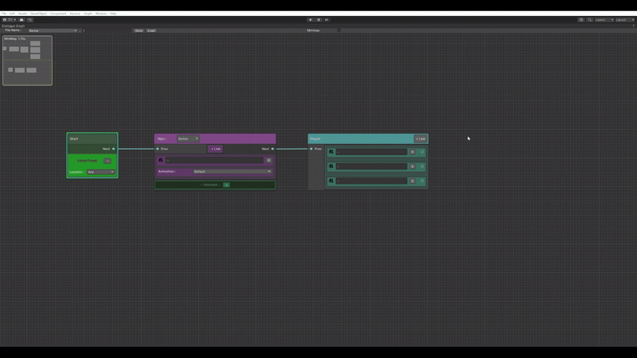

-
>Unity Dialogue Graph Tool
A fully custom dialogue editor for Unity using GraphView and UIElements. It supports runtime conditions, triggers, JSON serialization, and modular branching logic.
- Polymorphic nodes for player/NPC dialogue
- Runtime-usable ScriptableObject + JSON container
- Recovery system, runtime-friendly actions & condition types
- Custom inspectors and save/load tools

View Dialogue Tool on GitHub →
-
>Algorave Istanbul 1.18.25
Role: Live Visuals / VJing / Real-time Systems
An audio-visual performance by yuko, Uzak, Arian, and Baramuk, performed at nohextended.
Unity HDRP handled real-time point cloud VFX (fed via Spout from TouchDesigner), combined with live Stable Diffusion outputs and synced lighting/audio-reactive systems.

-
>Gurbet - Alter Egos: Audio Visual Showcase | NYU ITP
Role: Live VJ, Shader Artist, Tool Developer

Gurbet is an experimental Unity-based VJ performance featuring a custom-built datamosh shader, presented at the "AlterEgos: Audio Visual Showcase" hosted by Ali Santana at NYU ITP.
The piece uses motion vectors and accumulation buffers to simulate compression glitch artifacts. It was performed live using camera-based movement blending with real-time video and post-processing.
Soundtrack: Hey Douglas - Deterjan.
Watch the showcase video below:
View Datamosh Shader on GitHub →
-
>The Cycle - Aalto University
Role: Co-Creator, Visuals + Installation Systems

The Cycle is an interactive film-installation that links water cycles to human emotion. It was built with TouchDesigner and Azure Kinect to visualize participant movement as environmental change.
Participants affect real-time visuals through movement. The system uses generative VFX, noise mapping, and projection blending to convey cyclical transformation. Film shot in Helsinki.
-
>Itch.io Games
Some personal experiments and jam games hosted on Itch.io:
-
>Miscellaneous Visuals
Mosh Shader Test


instagram: @madayten
github @oykuyamakov
itch.io @yuko